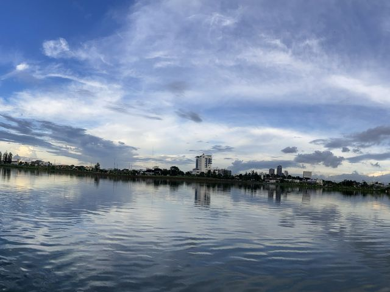

1. บึงสีฐาน (Sithan Lake)
สถานที่พักผ่อนหย่อนใจยอดนิยมของชาว มข. และบุคคลภายนอก ประกอบด้วยบึงน้ำขนาดใหญ่สองฝั่ง เป็นสถานที่จัดงานลอยกระทงประจำปี งานวิ่งมาราธอน และมีลานวัฒนธรรม ช่วงเย็นบรรยากาศดีมาก เหมาะแก่การวิ่งออกกำลังกายและดูพระอาทิตย์ตก
- จุดชมวิวพระอาทิตย์ตก
- ลานวัฒนธรรม
- KKU Art Gallery

